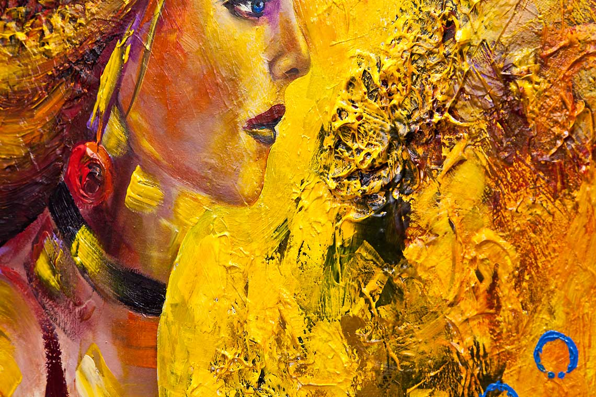

What is Abstract Art?
The beauty and freedom of abstraction is that it is not supposed to look like anything. Therefore it's the perfect way to express lofty, intangible concepts - such as timeless questions of a spiritual nature, or an exploration of the deep pools of human emotions, or an investigation of the various mysteries of life and existence. (Although that's not to say that all abstract art is heavily laden with deep existential meaning... a successful abstract can also be simply a pretty picture that uses pleasing colors!
By its very nature, abstraction encourages free association, which means you can assign your own meaning to the artwork. It won't tell you what it's about... you must experience the artwork for yourself, and understand it in your own way. Because of this, it takes a heightened sensitivity to both create and appreciate abstract artwork. Just like music is patterns of sound, abstract art is a harmony of patterns and rhythms of color, form and/or line.
Take a look at my painting above, Surface Reality. A talented young musician described it very well by writing: "Surface Reality is music you can hold in your hand. It is music eye candy." His description was well-put and spot-on!
Abstract art is visual music. The colors and designs form harmonies and melodies that resonate off the canvas and reverberate in the mind and heart of the viewer. Many of the first abstract artists were influenced by music, such as Paul Klee and Wassily Kandinsky.
Abstract art expresses things that are beyond what we can see with our eyes. Instead of portraying images that we can easily grasp or understand, abstract art focuses on the non-linear world of emotions and the subconscious. It is a language of color. Through colors, shapes and designs, abstract artwork explores inner worlds and essences, corresponding to an inner reality. It is the perfect platform for exploring the nature of consciousness, and the contemplative and timeless questions of transcendence and spirituality.